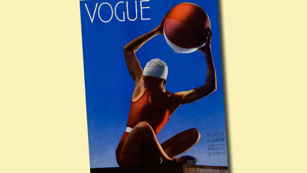
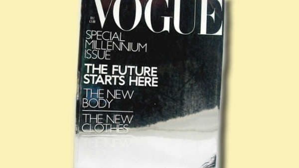

History of Vogue
The first issue of Vogue saw the light in 1892 in America. In 1909 the magazine was acquired by Conde Naste Publishers. The magazine’s volume became thicker and its main focus was turned on women. Naturally, the price was raised as well. In 1916, when the First World War made impossible Vogue deliveries to the Old World, the printing was started in England. This decision proved to be successful and 1920 the first issue of French Vogue was released. In1932 the American Vogue for the first time ever had placed a color photography on its cover (earlier it was exclusively given for drawings). Since that time the World’s best photographers - Irwin Penn and Guy Burden, Richard Avedon and Norman Parkinson, Helmut Newton and Peter Lindberg - became Vogue’s contributors. In 1960-s the American Vogue under the leadership of Diana Vriland had become the symbol of a new era – more creative, emancipated and sexy. (Diana Vriland biography on Wiki). Another important period in American Vogue history began in 1988, when Anna Wintour became its Chief Editor. Her talent, will and efficiency, reflected in The Devil Wears Prada movie, had finally turned Vogue into Nr1 Fashion Magazine of the World, not just reflecting fashion trends, but effectively shaping them. (Anna Wintour biography on Vogue.ru and Wiki).
First issue of Russian Vogue was released in September 1998. In August 1998, when economic crisis broke out in Russia, the advertisements of a new magazine with Keith Moss and Amber Valetta on its cover, and the headline logo “Finally in Russia” was perceived by many as a bad joke. Overcoming all perils, Vogue had emerged not just as Russia’s leading fashion magazine, but as a flagship of national glossy media, a benchmark of a glossy monthly magazine of absolutely different, international class. Among photographers who worked for Russian Vogue were Helmut Newton, Peter Lindberg, Steven Mizel and Paolo Roversi. Cindy Crawford and Naomi Campbell, Claudia Shiffer and Natalya Vodyanova posed for it as models. Texts were written by Pyotr Vail and Alexander Genis, Tatyana Tolstaya and Alexander Timofeevsky. Exclusively for Russian Vogue photo-sessions with great contemporary Russians Renata Litvinova and Ingeborga Dapkunaite, Nikita Mikhalkov and Oleg Menshikov,Victor Pelevin and Zemfira were arranged. Every June since 2001 during the Moscow International Film Festival Vogue gives its Award for Best Styling in a movie.
10 Greatest Vogue Covers Of All Time
10. July 1932 - The First Photographic Cover
The first images to grace the magazines cover were all fashion illustrations, as photography had yet to be invented. In July 1932, Vogue,cementing its status as an early adopter of new ideas, opted to use a, now iconic, photograph on the front cover to replace the usual illustrations. featuring a swimsuit clad model holding a beach ball above her head, the image is now sold as a print on anything from posters to postcards.
Photographed by Edward Steichen, the image was a first for the industry, and the use of photographs on front covers was quickly emulated by other publications, before becoming the norm that it is today.
9. March 1966 Donyale Luna

In news that would seem commonplace now, in 1966, British Vogue editor Beatrix Miller, made the controversial decision to put a model of ethnic origin on the front cover, for the first time ever. Photographed by David Bailey, the beautiful image has gone down in the Vogue hall of fame.
As the world's first black supermodel, the cover generated a lot of press at the time, but was extremely well received, and Time magazine declared her "unquestionably the hottest model in Europe."
8. December 1999 Millennium Issue Mirrored Cover
A cover as iconic as the Millenium it celebrated, it featured no celebrities or Supermodels, editor Alexandra Shulman instead opted to replace the typical cover with a mirrored effect, plain background. This is the most simple cover ever debuted, yet there was barely anything featured on it. The magazine itself flipped upside down halfway through, with one half looking at the history of fashion and the magazine, and the other looking towards fashions future.
The cover, which essentially cast the reader as the coverstar, proved to be just as popular as celeb fronted issues. This Collector's edition cover is now being sold online for upwards of £20 , so those of us who were clever enough to hold onto it will get a nice surprise.
7. May 1961 Sophia Loren

Nowadays, seeing a celebrity face smiling out at you from a magazine cover comes as no big surprise, but Vogue didn't tend to put celebrities on covers, (and even today they still favour a model.)
However, in 1961, Sophia Loren, arguably one of the biggest and most famous faces of the time, made her debut as a vogue cover star. it didn’t even feature her entire face, but it is still one of the most historic covers, as it sparked a shift in the industry from use of models to use of celebrities. It received such a good reaction, it has become the industry standard to put a celebrity on a magazine cover.
6. November 1992 Richard Gere and Cindy Crawford

In 1992, Richard Gere became the first man to be featured on the cover of vogue. Photographed with his then wife, Cindy Crawford. Still to this day, no man has ever been pictured on the cover without an accompanying female, and there have only been 5 men lucky enough to grace the cover. It was also the first time a couple has graced the cover together, a feat which has only been repeated once.
Due to this casually beautiful cover, everyone fell in love with the hot couple of the moment, and this made it all the harder on us when they split up only Three years later.
5. March 2013 Cara Delevingne

Now a regular face on vogue covers, 2013 saw Cara D feature for the first time ever. The cover introduced us to the quirky model, and sparked our obsession with her now famous brows.
The cover brought her to the attention of more people, and now we just can't get enough of her. She quickly became one of the most current names in the modelling world, as well as landing herself several major movie roles. Now a household name, vogue cemented itself as a launchpad for up and coming talent as they pushed her face to the forefront of the fashion world.
4. December 2006 90th Anniversary Collage Cover

To mark the 90th anniversary of UK Vogue, the magazine created a keepsake issue, and the cover was a collage of past issues. According to Alexandra Shulman, it was intended to be a "celebration of Vogue writers,editors and photographers, 1916-2006". The issue also contained a history of the magazine as well as many features highlighting differences in the last 90 years.
Still in keeping with the standard aesthetic of Vogue, the issue doesn't look out of place in a collection of other issues, but at the time it shifted from the singular focus it would normally have and gave the reader a good look at the overall style of vogue, as well as the history of the publication.
3. December 1998 Hillary Clinton

Hillary Clinton made history in 1998 as the first presidential wife to star on a vogue cover. The 1st lady appeared on the Dec issue of the US edition, and Michelle Obama is the only one to follow her lead since. The beautiful Christmas themed cover was shot by Annie Leibovitz and at the time, she was considered the most popular first lady since Jackie Kennedy. Her husband was just starting his 2nd term as president, and the family was being closely watched by the world media.
A decade later, during her own presidential race, she infamously rebuffed Anna Wintour's request to appear on the cover again.
2. April 1992 100th Anniversary Supermodel Cover

The 100th anniversary of US vogue was celebrated with a cover featuring 10 of the most recognisable Supermodels at the time. featuring Christy Turlington, Linda Evangelista, Cindy Crawford, Karen Mulder, Elaine Irwin, Niki Taylor, Yasmeen Ghauri, Claudia Schiffer, Naomi Campbell and Tatjana Patitz, they were all dressed in simple white jeans and shirts from none other than Gap. The Simple, dressed down cover was unusual alongside past covers, as the girls were all minimally dressed and there were so many cover stars.
Usually known for their standout covers and beautiful clothes they feature, this was a step away from this, towards a more casual style and more candid photography shots.
1. April 2014 Kim Kardashian and Kanye West

Last April, Kim Kardashian and Kanye West made their Vogue magazine cover debut, to celebrate their upcoming wedding. This decision by Anna Wintour had many Vogue fans reeling, saying they weren't worthy to grace the cover of such an iconic magazine, due to their status as reality TV stars.
The issue also had another first, the first hashtag to appear on a cover, deeming the pair to be the #Worldsmosttalkedaboutcouple. Love them or hate them, for that short period they really did get everyone talking, and twitter blew up with reactions. Even people who weren't regular vogue readers had an opinion on the image, and the magazine once again showed itself to be the forefront of pop culture.